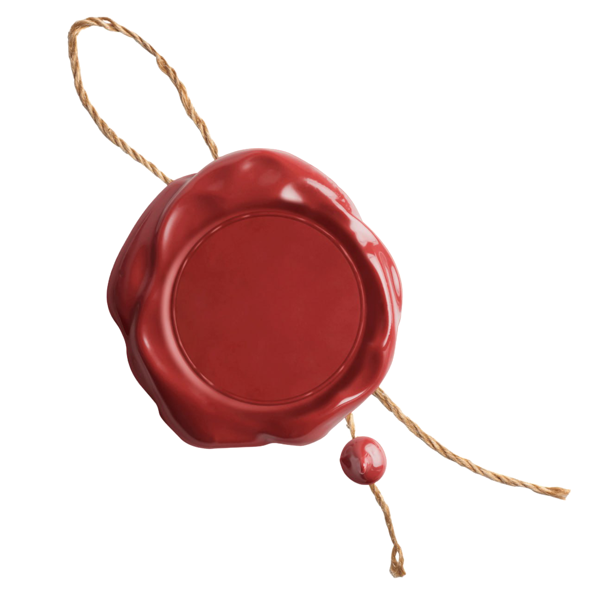
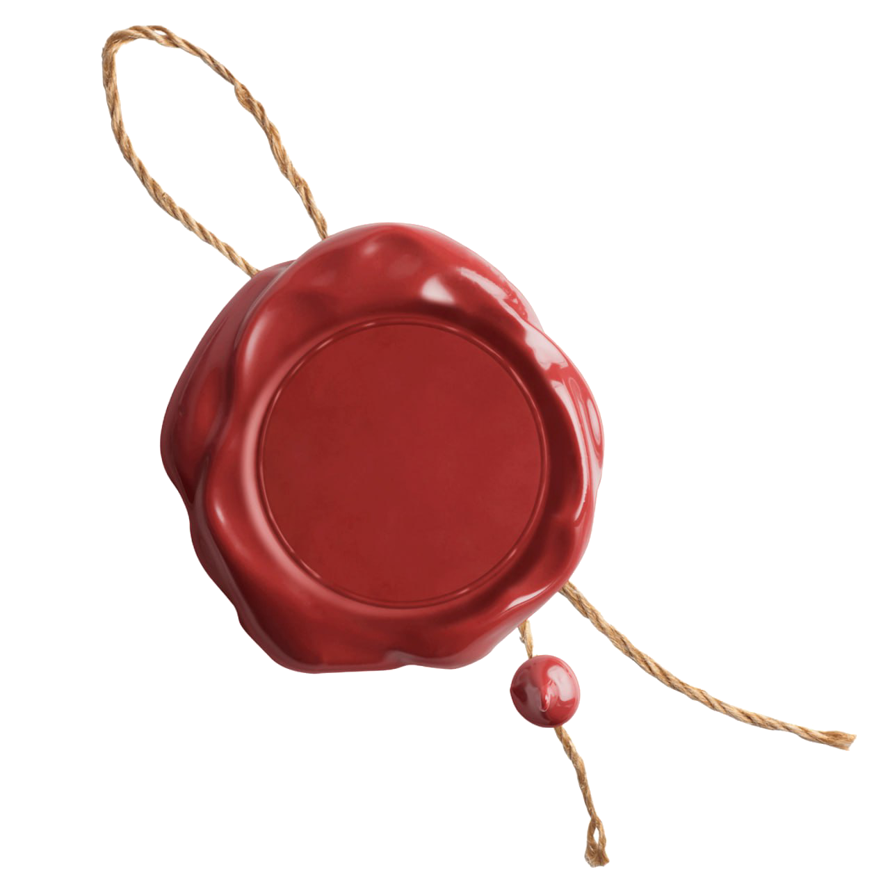

Русский изобретатель и механик XVIII века, опередивший свое время. Без формального образования он самостоятельно освоил механику, создавая сложные часовые механизмы, мосты и подъемные устройства.
Его самоходный экипаж и разработки в судостроении, транспорте и оптике предвосхитили достижения промышленной революции. Многие идеи, включая световые системы для маяков, значительно опередили эпоху.
Помимо инженерии, Кулибин увлекался живописью и музыкой, оставив богатый архив чертежей. Несмотря на отсутствие признания при жизни, его изобретения оказали огромное влияние на развитие науки и техники.
 Чтобы лучше понять его путь, нужно вернуться в начало.
Чтобы лучше понять его путь, нужно вернуться в начало.
Туда, где всё зарождалось в юность будущего изобретателя, полную любопытства и первых открытий.
Мы окунемся в мир его гениальных творений, изменивших представление о возможностях механики.
А в завершение посмотрим на эпоху, в которой он жил, — время великих перемен, сложных вызовов и нераскрытых возможностей.
 
